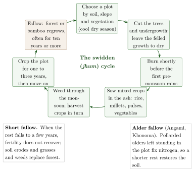
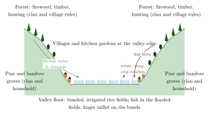

Chapter 2: Tribal Ecological Knowledge and Forest Management¶
2.1 Introduction: Forest Peoples and Their Knowledge¶
For India’s forest-dwelling communities the forest is at once home, workplace, larder, pharmacy, social space and the dwelling of deities and ancestors. Communities that have lived in the same landscape for generations know its plants, animals, soils and seasons in great detail. This chapter describes that knowledge with examples from the Gond, Baiga, Munda, Santal and Oraon of central and eastern India, the Bhil of the west, the Soliga, Irula and Jenu Kuruba of the south, and the communities of the North-East.
Two cautions apply throughout. First, ecological knowledge is not the same thing as ecological virtue: communities have overhunted, cleared and quarrelled over forests like other people, and their practices have changed with markets and population. Second, much of what was once described as “primitive” or “destructive” land use (shifting cultivation, burning, grazing) turns out on closer study to be more complex, and sometimes more sustainable, than the forest administration assumed (Gadgil and Guha 1993; Ramakrishnan 1992).
Traditional Ecological Knowledge
Fikret Berkes defines traditional ecological knowledge (TEK) as a cumulative body of knowledge, practice and belief about the relationships of living beings, including humans, with one another and with their environment, which evolves by adaptation and is handed down through the generations by cultural transmission (Berkes 1999). It rests on long observation of one place, joins ecological with social and religious knowledge, is passed on through practice, story and ritual, and changes as conditions change.
2.2 Knowing Species¶
The foundation of ecological knowledge is familiarity with the species of one’s landscape: their names, appearance, habitats, seasons, uses and relationships with other species.
2.2.1 Ethnobotany¶
Ethnobotanical surveys in India, pioneered by S. K. Jain and the Botanical Survey of India from the 1960s, have recorded thousands of plant names and uses among Adivasi communities (Jain 1981, 1991). Local classifications typically combine several principles: form (leaf, bark, growth habit), habitat (riverbank, hilltop, shade, clearing), season (when a plant fruits or can be dug), use (food, medicine, fibre, timber, ritual) and relationship (which animals eat it, which plants grow with it). Experienced gatherers can name and describe several hundred species. Such knowledge is unevenly distributed within a community: women who gather food plants, men who hunt, and healers who use medicinal plants know different parts of the forest well.
Village-level records of such knowledge, the People’s Biodiversity Registers, are discussed in Section 13.4.
2.2.2 Animals¶
The Irula of northern Tamil Nadu are known for their skill in catching snakes. After the export trade in snake skins was banned in the 1970s, the Irula Snake Catchers’ Industrial Co-operative Society was founded in 1978 near Chennai, with the support of the herpetologist Romulus Whitaker. Its members catch venomous snakes, extract venom and release the snakes; the venom is supplied to manufacturers of anti-venom serum. The co-operative is one of the clearest cases of community knowledge being put to public-health use with benefit to the community.
Elsewhere Adivasi trackers and guides, such as the Chenchu of the Nallamala hills in Andhra Pradesh and Telangana or the Soliga and Jenu Kuruba of Karnataka, have worked with forest departments and researchers on wildlife surveys. Their skills are widely relied upon, though they have often been employed as low-paid labour rather than recognised as experts.
2.2.3 Foragers: Birhor and Chenchu¶
A few communities lived until recently mainly by hunting and gathering. The Birhor of the Chotanagpur plateau moved in small bands through the forest, hunting monkeys and small game with nets and making rope from the bark fibres of forest creepers, which they traded with villagers for grain; Sarat Chandra Roy’s monograph of 1925 is the classic account (Roy 1925). The Chenchu of the Nallamala hills lived by gathering roots, fruits and honey and by hunting, and were studied by Fürer-Haimendorf in the 1940s (Fürer-Haimendorf 1943). Both are now classed as Particularly Vulnerable Tribal Groups. Their detailed knowledge of the forest is matched by extreme poverty, and both have been pressed by government schemes and by forest and wildlife policy to settle.
2.2.4 One Tree: The Sal¶
The life of a single tree shows how deeply ecological, economic and religious knowledge are interwoven. The sal (Shorea robusta) dominates the forests of the Chotanagpur plateau and much of eastern and central India. Its timber builds houses; its leaves are stitched into plates and cups and sold; its seeds are gathered for oil; its resin is burned as incense; and its twigs are used to clean teeth. Its flowering in spring marks the festival of Sarhul or Bāhā, when the village priest worships in the grove of sal trees and the new flowers are distributed to every house (Chapter 3). Colonial foresters valued sal above all for railway sleepers, and promoted pure sal forest at the expense of the many other trees that villagers used, a conflict that ran through the history of forest management in the region (Gadgil and Guha 1993).
2.3 Shifting Cultivation¶
Shifting cultivation (swidden) is known by many names: jhum in the North-East, bewar or dahiyā among the Baiga, podu in Andhra Pradesh and Odisha, penda in Bastar, kumri in the Western Ghats. A patch of forest is cut, dried and burned; mixed crops of millets, rice, pulses, oilseeds and vegetables are grown for one to three years; and the plot is then left fallow to regrow forest while cultivation moves on. The main regional forms are listed in Table 2.1.
Colonial and post-colonial administrators condemned swidden as wasteful and destructive, and tried to replace it with settled plough agriculture. Long-term studies, notably those of P. S. Ramakrishnan in the hills of North-East India, have given a more balanced picture (Ramakrishnan 1992):
With long fallow periods (often more than ten years), soil fertility and forest cover recover, and the landscape becomes a mosaic of fields and forest of different ages that can support high biodiversity.
Swidden fields are often highly diverse, with many crops and varieties grown together.
Cultivators select plots by soil, slope and vegetation, and manage the regrowing fallow (for example, bamboo in the North-East) as a resource.
When fallow periods are shortened by population growth, loss of land to reserved forests, plantations or mining, or by market pressures, the system degrades: soil erodes and weeds and grasses replace forest.
The problem, in other words, is less swidden itself than the conditions under which it is practised. Where fallow cycles have fallen to a few years, as in parts of the North-East, communities themselves have sought alternatives. Figure 2.1 sets out the stages of the cycle and the two ways in which it can change.

| Region | Communities | Name and notes |
|---|---|---|
| Central India | Baiga, Maria and other Gond groups | Bewar, dahiyā, penda; largely banned in reserved forests since the colonial period (Elwin 1939) |
| North-East | Naga, Mizo, Garo and others | Jhum; bamboo fallows; studied in detail by Ramakrishnan (1992) |
| Eastern Ghats | Kondh, Sora, Bonda, Koya | Podu; millets and pulses on hill slopes |
| Western Ghats | Malekudiya and others | Kumri; restricted from the nineteenth century |
2.3.1 Alder Fallows of the Angami¶
One alternative was developed by the cultivators themselves long before the problem of short fallows became a matter of policy. In the Angami Naga villages around Kohima, above all Khonoma, farmers keep the Nepalese alder (Alnus nepalensis) growing in their jhum fields instead of clearing it. When a plot is opened, the alders are not felled but pollarded, their trunks cut back and left standing, and the trimmed branches are burned on the plot or carried home for fuel and building; the pollarded trunks sprout again and grow through the cropping years and the following fallow. The alder is a nitrogen-fixing tree, and its leaf litter and roots restore the soil faster than an ordinary fallow, so that a plot can be returned to cultivation after a shorter rest without the loss of fertility and the invasion of grasses that short fallows usually bring. Malcolm Cairns and his Naga co-authors, who studied the system at Khonoma, called it an “improved fallow” developed by farmers, and suggested that it may have arisen when the insecurity of the head-hunting era made villages prefer to farm intensively on land close to home; the colonial reports on which part of this history rests are thin, and the suggestion remains a hypothesis (Cairns 2007).
The alder system is a good example of what Ramakrishnan meant by building on local knowledge: in his view the most promising way of easing pressure on the hills was not to abolish jhum but to strengthen fallows with fast-growing, useful, nitrogen-fixing trees and bamboos that farmers already knew and valued (Ramakrishnan 1992). It also shows that “traditional” shifting cultivation was never a single unchanging technique; communities adjusted it to soils, security and population, as they still do.
2.4 Forest Produce and Its Management¶
Non-timber forest products (NTFP, called “minor forest produce” in Indian law) include fruits, flowers, seeds, leaves, gums, resins, honey, bamboo and medicinal plants. For many Adivasi households they are an important source of food and cash. Mahua (Madhuca longifolia) flowers and seeds, tendu (Diospyros melanoxylon) leaves for wrapping bīḍī, sal (Shorea robusta) seeds and leaves, and chiraunjī (Buchanania lanzan) seeds are among the most important in central India (Table 2.2).
| Product | Species | Uses |
|---|---|---|
| Mahua flowers and seed | Madhuca longifolia | Food, spirit, edible fat; sold in large quantities |
| Tendu (kendu) leaves | Diospyros melanoxylon | Wrappers for bīḍī; one of the most valuable forest-produce trades |
| Sal seed and leaves | Shorea robusta | Seed fat for industry; leaves stitched into plates and cups |
| Chiraunjī | Buchanania lanzan | Kernels sold as a dry fruit |
| Tamarind | Tamarindus indica | Fruit pulp for food and sale |
| Lac | Kerria lacca on host trees | Resin for varnish, bangles, dyes |
| Tasar cocoons | Antheraea mylitta | Wild silk |
| Bamboo | Many species | Building, baskets, paper pulp |
| Honey and wax | Apis dorsata and others | Food, medicine, trade |
Communities have rules for gathering: who may collect from which trees, when the season opens, how fruit is to be picked. But the trade in forest produce has also been a history of exploitation. For decades, state monopolies and private traders paid collectors low prices for tendu and other products; PESA (1996) and the FRA (2006) gave ownership of minor forest produce to communities, and some gram sabhas now sell produce themselves (Chapter 14).
2.4.1 The Soliga of Biligiri Rangaswamy Temple Hills¶
The Soliga of the Biligiri Rangaswamy Temple (BRT) hills in Karnataka have been studied for many years by ecologists of the Ashoka Trust for Research in Ecology and the Environment (ATREE). Their harvest of nelli (Indian gooseberry, Phyllanthus emblica) and other products is regulated by custom, but research showed that intensive commercial harvesting, together with fire suppression and the invasion of the shrub Lantana camara, could reduce the regeneration of some species. The Soliga themselves argued that the ban on their traditional low-intensity burning, imposed when the area became a wildlife sanctuary, had allowed lantana to spread. Local knowledge and outside research thus corrected each other, and the evidence supports neither the community nor the forest department as the sole judge of what the forest needs. In 2011 the Soliga of BRT became one of the first communities inside a tiger reserve to have their community forest rights recognised under the FRA.
2.5 Fire¶
Fire has been used by forest communities for clearing swidden plots, encouraging fresh grass for grazing, clearing undergrowth around villages and paths, driving game and collecting forest produce such as mahua flowers, which are easier to gather from burned ground. Forest departments, from the colonial period onwards, adopted policies of fire exclusion to protect timber.
The ecological picture is mixed. In the dry deciduous forests of central and southern India, which have been burned for a very long time, many species are fire-tolerant and some grasslands depend on periodic fire; suppressing all fires can lead to the build-up of fuel and to invasion by unpalatable shrubs. On the other hand, frequent or uncontrolled fires damage regeneration, and the large number of fires set today for mahua collection or grazing is a real concern for forest managers. Local knowledge of when, where and how to burn is therefore relevant to forest policy, but it needs to be combined with monitoring rather than simply assumed to be benign (Gadgil and Guha 1995).
The Baiga, among whom Elwin lived for many years, were known for their skill in managing fire for bewar cultivation (Elwin 1939). The community’s name is sometimes popularly derived from Sanskrit vaidya (“physician”), reflecting their reputation as healers and priests of the land among neighbouring Gonds; the etymology is uncertain.
2.6 Soil, Crops and Pests¶
Farmers in Adivasi and other rural communities classify their land in detail, distinguishing soils by colour, texture, depth, water-holding capacity and position in the landscape (upland, slope, low-lying field), and match crops and varieties to each. In the rice-growing plateaus of Jharkhand and Odisha, for example, cultivators distinguish upland (ṭāṛ), medium land and lowland (don) fields, each with its own rice varieties and sowing calendar. Such classifications are often finer than those of soil-survey maps, though they are designed for local decisions rather than general comparison.
Pest control in traditional farming relies on crop mixtures, timing, field sanitation and botanical preparations, of which neem (Azadirachta indica) is the best known; a European patent on a neem-based fungicide, revoked after it was shown that such uses were long known in India, is discussed in Section 12.10.
2.7 Community Conservation¶
Some communities protect particular species or places with great consistency. Two of the best known are not Adivasi. The Bishnoi of Rajasthan, a religious community founded by Jambhoji in the late fifteenth century, forbid cutting green trees and killing animals, and remember the deaths at Khejarli in 1730 of Amrita Devi and others who tried to stop the felling of khejṛī trees; the Chipko movement of the 1970s in the Garhwal hills, led largely by peasant women, defended village rights in forests against commercial felling (Guha 1989). Both are treated in Volume 15, Kṛṣi and Jīva Vijñāna. Table 2.3 lists some of the community conservation traditions discussed in this volume.
| Community | Region | Practice |
|---|---|---|
| Bishnoi | Rajasthan | Protection of khejṛī trees and wild animals as religious duty |
| Khasi | Meghalaya | Law kyntang and law lyngdoh: sacred forests under clan and village control (Chapter 3) |
| Munda, Oraon, Santal, Ho | Jharkhand, Odisha, W. Bengal | Sarnā and jāherthān: village sacred groves |
| Dongria Kondh | Odisha | Protection of the Niyamgiri hills as the domain of the deity Niyam Raja (Chapter 11) |
| Garhwal villagers | Uttarakhand | Chipko movement against commercial felling (Guha 1989) |
| Angami (Khonoma) | Nagaland | Village ban on hunting and a community sanctuary (Section 2.7.2) |
2.7.1 Self-Initiated Forest Protection in Odisha¶
In Odisha, from the 1970s and 1980s, thousands of villages began on their own initiative to protect degraded forests near them, forming committees, appointing watchers or rotating patrol duties among households (ṭhengā pālī, “stick turn”), and setting rules for the collection of fuelwood and produce. Federations of such villages later pressed for legal recognition of their role, which the Forest Rights Act eventually provided (Section 11.4).
2.7.2 Village Conservation in Nagaland¶
Some of the most striking recent examples of community conservation come from Nagaland, where most land and forest is owned by villages and clans rather than the state. In 1998 the Angami village of Khonoma banned hunting and set aside part of its forest as a sanctuary for the Blyth’s tragopan and other wildlife. In Wokha district, villagers around the Doyang reservoir had for some years trapped very large numbers of Amur falcons, which roost there in their tens of thousands during their autumn migration from north-east Asia to Africa. After the scale of the killing was publicised in 2012, village councils, churches, the state government and conservation organisations worked together; the villages, led by Pangti, banned the hunt, and within a year the killing had almost stopped. The roost is now protected by the villages themselves and attracts visitors. In both villages the change came through village councils and churches, and it reversed earlier practice rather than restoring an old one.
2.8 Forest Policy and Forest People¶
The succession of forest laws and policies, from the Indian Forest Acts of 1865, 1878 and 1927 (Chapter 1) through the National Forest Policies of 1894, 1952 and 1988 to Joint Forest Management, is traced in Volume 15, Kṛṣi and Jīva Vijñāna. Seen from the forest villages, its main stages were these. The Wild Life (Protection) Act, 1972, and Project Tiger (1973) created national parks and sanctuaries from which many people were relocated, often with inadequate compensation, while those who remained lost rights of cultivation, grazing and collection; critics have called this model “fortress conservation”. The Forest (Conservation) Act, 1980, slowed the diversion of forests to industry but was also used against forest dwellers whose land had never been recorded, and made even a school or a well in a forest village depend on central clearance. The National Forest Policy of 1988 for the first time made the domestic needs of tribal and other forest-dependent people the first charge on forest produce, and Joint Forest Management, promoted from 1990, gave village committees a share of produce, though the committees were created and controlled by the forest department. Only the Forest Rights Act, 2006, recognised forest dwellers’ rights in law, including the right to manage community forests, and required that any relocation from protected areas be voluntary and with the informed consent of the gram sabha (Section 11.4).
2.8.1 Colonial Forestry on the Ground¶
Historians have shown how these policies worked in practice. Mahesh Rangarajan’s study of the Central Provinces between 1860 and 1914 traces how the forest department reserved forests, restricted shifting cultivation and grazing, and sought to eliminate “vermin” such as tigers and wolves, while forest dwellers resisted through evasion, petition and occasionally revolt (Rangarajan 1996). K. Sivaramakrishnan’s history of forests in colonial Bengal and the Jungle Mahals shows how foresters’ own ideas, about fire for instance, changed through argument and experience, and how forest management was shaped by local negotiations as much as by central policy (Sivaramakrishnan 1999). These studies complicate the picture of a single, all-powerful colonial state imposing its will, but they confirm that the burden of the new order fell heavily on Adivasi communities.
The history shows a slow shift from a view of forest dwellers as a threat to the forest towards a view of them as rights-holders and partners. The shift is incomplete, and conflicts between conservation authorities and forest communities remain sharp, especially in tiger reserves.
2.9 Seeds and Agrobiodiversity¶
Adivasi farmers maintain a large share of India’s remaining traditional crop varieties, especially of rice and millets. The Jeypore tract of Koraput district in southern Odisha has long been regarded by rice scientists as an important centre of rice diversity; large collections of local varieties were made there in the mid-twentieth century, and in 2012 the Food and Agriculture Organization recognised the Koraput traditional agriculture system as a Globally Important Agricultural Heritage System. Kondh, Paraja, Gadaba and other cultivators continue to grow many local varieties, chosen for particular fields, seasons, tastes and ritual uses.
In many communities women are the main keepers of seed: they select, store and exchange it, and know which variety suits which field and dish. Non-governmental organisations in Odisha, Jharkhand, the Deccan and the North-East have supported community seed banks and seed fairs to strengthen these practices. The knowledge that goes with a variety (how to grow it, process it and cook it) is lost when the variety is abandoned; seed banks can conserve the grain but not this knowledge.
2.10 Insects¶
Insects are food, livelihood and indicators of the seasons. Many communities in central and north-eastern India eat insects: the red weaver ant (Oecophylla smaragdina), whose eggs and adults are made into a sour chutney (chāpṛā) in Bastar and neighbouring regions; termites, collected when the winged forms swarm after the first rains; the larvae of bees and wasps; and silkworm pupae.
Lac, the resin secreted by the lac insect (Kerria lacca) on host trees such as kusum (Schleichera oleosa), palāś (Butea monosperma) and ber (Ziziphus mauritiana), has been cultivated and traded for centuries, and Jharkhand and Chhattisgarh are major producers. Lac cultivators must know host trees, the insect’s life cycle and the timing of inoculation and harvest. Tasar silk is produced from the cocoons of the wild silkworm Antheraea mylitta, reared on asan (Terminalia) and arjun trees by Santal, Ho, Munda and other communities.
Honey-gathering communities such as the Jenu Kuruba (“honey Kuruba”) of Karnataka and the Kurumba and Irula of the Nilgiris collect honey from the giant rock bee (Apis dorsata) on cliffs and tall trees. Their knowledge of where the colonies nest, when the flowering seasons bring the best honey, and how to harvest with smoke at night is considerable; so are the risks of the work.
2.11 Gender and Ecological Knowledge¶
Ecological knowledge is divided by gender. In most Adivasi communities women gather food plants, fuelwood, fodder and many forest products, fetch water, and select and store seed; men clear land, hunt, plough (where ploughing is practised) and cut timber. As a result women often know more than men about the edible and medicinal plants near the village, and men more about distant forest and animals. Because outside researchers and officials have usually spoken to men, women’s knowledge has been under-recorded, and women have been under-represented in forest committees and decisions.
Women have also been at the forefront of forest protection. In the most famous episode of the Chipko movement, in 1974 at Reni in the Garhwal Himalaya, Gaura Devi and other women of the village confronted contractors’ men who had come to fell trees, while the village men were away, and prevented the felling (Guha 1989). In Odisha’s self-initiated forest protection (Section 2.7.1), women’s groups have often taken on patrolling and the enforcement of rules. Recognising women’s knowledge and giving them a voice in forest governance is now a stated aim of forest policy, though one still far from realised.
2.12 Living with Wild Animals¶
Forest communities live alongside animals that can destroy their crops, kill their livestock and threaten their lives. In Jharkhand, Odisha, Chhattisgarh, West Bengal and Assam, conflict with elephants has grown as forests have been fragmented by mines, roads and settlements: elephants raid fields and granaries, damage houses and kill people, while elephants themselves are killed by electrocution, trains and poisoning. Leopards, bears and wild pigs cause losses elsewhere.
Communities have long-standing ways of coping: watching fields from platforms at night, drums, fires and noise to drive animals away, knowledge of the routes and habits of elephant herds, and, in many places, religious respect for the elephant or tiger that discourages retaliation. Government compensation for losses is often slow and inadequate. Conservationists increasingly recognise that the willingness of local people to tolerate wild animals is essential to conservation, and that this depends on fair treatment, prompt compensation and secure rights, not only on traditional attitudes.
2.13 Living Root Bridges¶
In the southern Khasi and Jaintia hills of Meghalaya, among the wettest places on earth, villagers have for generations built bridges from the living roots of the rubber fig (Ficus elastica). Aerial roots are guided across a stream, often along a framework of bamboo or the hollowed trunk of an areca palm, until they reach the far bank and take root; over decades they thicken and interweave, and stones are laid to form a walkway. Some bridges have two levels. A root bridge takes many years to become usable but, unlike timber bridges, grows stronger with age and resists the floods of the monsoon. Their construction requires knowledge of the tree, patience across generations and collective maintenance by the village. The bridges have become a major tourist attraction, which brings income but also risks damage from crowds.
The first systematic scientific study of the bridges was made by the architect Ferdinand Ludwig, the botanist Thomas Speck and their colleagues, working with the root-bridge researcher Wilfrid Middleton and with the villages concerned (Ludwig et al. 2019). They inventoried seventy-four bridges, at altitudes from under a hundred metres to about 1,200 metres, and from 2 to more than 50 metres long. Their measurements explain why the bridges strengthen with age. Roots that bear load respond with secondary growth, thickening and changing their cross-section according to the direction in which they are trained; and roots that touch can graft together (inosculation), so that a bridge gradually becomes a single, self-repairing network. The builders achieve this by choices that rest on long experience: which trees to use, how to guide young roots across a stream, how long to wait before a root can bear weight, and how to keep reinforcing the structure as it grows. The bridges are thus, in the study’s terms, both a technology and a form of plant cultivation, and they have attracted the interest of architects who hope to use living plants in buildings. In 2022 the “living root bridge cultural landscapes” of Meghalaya, known in Khasi as jingkieng jri, were placed on India’s Tentative List for World Heritage nomination. As with sacred groves (Chapter 3), the knowledge that matters for their future is the village’s knowledge of how to grow and maintain them, and the village’s authority to do so.
2.14 The Apatani Valley: Rice, Fish and Forest¶
In the hills of central Arunachal Pradesh, where most communities practised shifting cultivation, the Apatani of the Ziro valley built something quite different: a permanently cultivated valley floor of irrigated rice fields, surrounded by managed groves and forest, supporting a population far denser than that of their jhum-cultivating Nyishi neighbours. The Apatani speak a language of the Tani group of Tibeto-Burman, and their own traditions describe a migration into the valley from the north, after which the marshy valley floor was drained and turned into fields. The irrigation network is outlined in Section 4.3; this section looks at the system as a whole (Figure 2.2), and at what it shows about the variety of Adivasi agriculture.

2.14.1 An Integrated Landscape¶
The Apatani landscape is organised in rings. On the valley floor lie the bunded rice fields, levelled with great precision so that water can be passed from field to field, with finger millet often planted on the bunds. Near the villages are kitchen gardens and small dry fields; on the lower slopes, groves of pine and bamboo planted and owned by clans and households, which supply timber, poles and the bamboo used for pipes, fences and houses; above them, forest used for firewood, timber and hunting under clan and village rules. Fish are raised in the flooded rice fields during the growing season; today the main species is the introduced common carp. Fertility is maintained largely by recycling: household refuse, the dung of pigs and poultry, crop residues and leaf litter carried down from the slopes are worked into the fields, so that the plots nearest the villages, which receive most of this material, are the most fertile.
Anil Kumar and P. S. Ramakrishnan’s study of energy flow through an Apatani village, part of Ramakrishnan’s long programme of research on hill agriculture in the North-East, found that the rice system had a high energy and economic efficiency compared with other farming systems of the region, and attributed this to the tight recycling of resources between forest, village and field and to the integration of fish with rice (Kumar and Ramakrishnan 1990). The point is not that the Apatani had discovered a superior technique that others failed to find, but that a valley with a reliable water supply allowed a different solution from the steep slopes of the jhum country, and that the Apatani made the most of it through generations of careful engineering and management.
2.14.2 Institutions and Inequality¶
Fürer-Haimendorf, who first visited the valley in 1944, was so struck by the intensity of its agriculture, the size of its villages and the elaboration of its institutions that he subtitled his monograph “a primitive civilization of the eastern Himalayas” (Fürer-Haimendorf 1962). The word “primitive” belongs to the evolutionary vocabulary of his time; the observation behind the subtitle, that the Apatani had built a complex society without a state, was sound. Land, groves and fields were owned by clans and individual households and could be inherited, bought and sold; disputes were settled not by a chief but by clan representatives (bulyañ, Fürer-Haimendorf’s buliang), who mediated and arbitrated and relied on public opinion rather than force. Rice was exchanged with neighbouring communities for cattle, especially the semi-domesticated mithun, and for other goods.
Fürer-Haimendorf was equally clear that this was not an egalitarian society. He described a division between free clans and a dependent, partly unfree class, some of whose members were descended from captives or from people bought from neighbouring groups, and he recorded the raids and kidnappings that marked relations between the Apatani and the Nyishi before the extension of Indian administration. An account that praises the ecological achievement of the valley while leaving out these facts would repeat, in reverse, the old mistake of treating Adivasi societies as all of one kind.
2.14.3 Pressures¶
Since the 1960s the valley has changed rapidly. The towns of Old Ziro and Hapoli, the district headquarters, have grown on the valley edge; roads, schools, wage employment and Christianity, alongside a revived indigenous Donyi-Polo religion, have reshaped village life; some fields have been converted to house plots, and fewer young people farm. In 2014 the Apatani cultural landscape was placed on India’s Tentative List for World Heritage nomination. Whether that recognition helps will depend, as with the root bridges, on whether the Apatani themselves remain able to decide how the valley is farmed, built on and visited.
2.15 Pastoral Knowledge¶
Pastoralists, some of them Scheduled Tribes and others not, hold extensive knowledge of animals, grazing lands and seasonal movement.
-
The Toda of the Nilgiris keep herds of buffaloes that are at the centre of their religion: some herds are sacred, tended by dairymen-priests in special dairies according to elaborate ritual rules, which W. H. R. Rivers described in his classic study of 1906.
-
The Raika (Rebari) of Rajasthan are camel and sheep breeders whose knowledge of camel breeding, health and grazing has been documented by researchers working with them. The decline of camel herding, as camels lost their role in transport and as grazing lands shrank, has threatened this knowledge.
-
The Gaddi of Himachal Pradesh move their sheep and goats between high summer pastures and winter grazing in the lower hills; the Van Gujjar take their buffaloes between the Shivalik foothills and the high pastures of Uttarakhand and Himachal Pradesh; the Bakarwal of Jammu and Kashmir follow similar routes. Their access to forests and protected areas has been repeatedly contested.
-
The Maldhari of the Banni grasslands of Kutch have bred the Banni buffalo, well adapted to heat and scarce water, which was recognised as a distinct breed by the national animal genetic resources authorities in 2010. Banni’s pastoralists have also campaigned for community rights over the grassland under the Forest Rights Act.
Pastoral knowledge includes the reading of grass and water conditions, the timing of movement, animal breeding and selection, and veterinary care (Chapter 7). It was long dismissed as backward by agricultural and forest administrations; ecologists now recognise that mobile grazing can sustain grasslands that sedentary systems degrade.
2.16 Bamboo Flowering and Famine¶
In Mizoram and neighbouring areas, the bamboo Melocanna baccifera, which covers large parts of the hills, flowers gregariously and then dies at intervals of about half a century. The flowering produces a huge crop of seeds, on which rat populations explode; when the seeds are exhausted, the rats devour standing crops and stored grain, causing famine. Mizo tradition knew this cycle as mautām, and anticipated famine after the flowering. The mautām of 1959 led to a severe famine whose poor handling by the government contributed to the Mizo uprising of 1966 (Chapter 1). Before the next flowering, in 2006–08, the state government, drawing on both local knowledge and scientific advice, organised rat control, crop diversification and food supplies, and the effects were much less severe. The case is a clear example of community knowledge of a long ecological cycle informing public policy.
2.17 Adapting to Drought and Flood¶
Communities in climatically variable landscapes have built that variability into their livelihoods. The Bhil and other communities of the Aravalli hills and the margins of the Thar desert rely on drought-tolerant millets and pulses, mixed farming and livestock, water harvesting (Chapter 4) and knowledge of wild foods that can be gathered in famine years (Chapter 5).
On the Brahmaputra floodplain the Mising build houses on stilts (chāng ghar), grow rice varieties suited to flood seasons and fish in the flooded fields and channels. These adaptations are not static tradition: communities have changed their practices as embankments, deforestation upstream and changes in the river’s course have altered the floods.
2.17.1 Observing Climate Change¶
Farmers, herders and gatherers in many parts of India report changes in their environment: monsoons that start later and end more abruptly, heavier downpours, longer dry spells, earlier or irregular flowering of trees such as mahua and sal, declining springs in the hills, and new pests. Such reports are valuable because they come from places where scientific monitoring is thin and because they describe changes in the terms that matter for livelihoods. They need to be interpreted carefully, since memory can exaggerate or compress change, but international reviews of traditional knowledge and climate change have found that local observations often agree with instrumental records and add detail to them (Nakashima et al. 2012).
The examples in this chapter, from the Angami alders to the Doyang roost, have one thing in common: the knowledge was being used and changed by the people who held it. The next chapter turns to the places where that knowledge meets religion most directly, the sacred groves.
Key Points
-
Adivasi ecological knowledge is detailed and practical, but it is not the same as ecological virtue and changes with circumstances.
-
Shifting cultivation can be sustainable with long fallows; its problems arise mainly when fallows are shortened.
-
Forest policy has moved slowly from treating forest dwellers as a threat to recognising them as rights-holders.
-
Community conservation in places such as Khonoma and the Doyang roost shows communities changing practices through their own institutions.
Further Reading¶
-
Gadgil and Guha (1993): an ecological history of India, with much on forest communities.
-
Ramakrishnan (1992): the classic study of shifting cultivation in North-East India.
-
Cairns (2007): case studies of farmers’ own improvements to shifting cultivation across Asia, including the Angami alder fallows.
-
Fürer-Haimendorf (1962): the classic ethnography of the Apatani valley.
-
Berkes (1999): a general introduction to traditional ecological knowledge.
-
Guha (1989): forests, the state and peasant resistance in the Himalaya.
-
Gadgil et al. (1993): a short and influential article on indigenous knowledge and conservation.